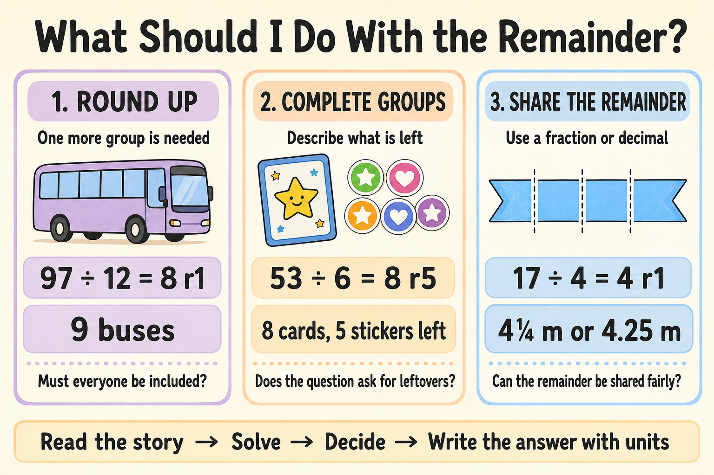

Have you ever watched a student complete a division calculation correctly, only to freeze when asked what the remainder actually means?
But if the question asks, “How many buses are needed?”, the answer is not 8 remainder 1. It is 9 buses.
The division is correct, but the final answer is not. This happens because interpreting a remainder involves more than completing a calculation. Students must read the situation carefully, understand what the numbers represent and decide what should happen to the amount left over.
The good news is that this reasoning can be taught explicitly. Once students understand the main ways a remainder can affect an answer, division word problems become much easier to manage.
Why Does the Meaning of a Remainder Change?
A remainder is the amount left after a number has been divided into equal groups. For example:
The calculation tells us that 25 contains six complete groups of four, with one left over.
However, the calculation alone does not tell us what to do with the leftover amount. The context decides whether we should:
- round the answer up;
- report the number of complete groups and what remains; or
- share the remainder as a fraction or decimal.
In upper-primary mathematics, students increasingly apply multiplication and division strategies to practical problems and explain what an answer means in its real-world context. The linked worksheet supports Australian Curriculum Version 9.0 content description AC9M5N07.
Three Ways to Interpret a Remainder
Giving the three possibilities clear names helps students discuss and justify their decisions.

1. Round Up: One More Group Is Needed
Round up when every person or object must be included and only whole groups, containers or vehicles can be used.
97 ÷ 12 = 8 remainder 1
Eight buses carry 96 students, so another bus is required.
Answer: 9 buses are needed.
This interpretation often appears in problems involving buses, tables, boxes, teams, tents and containers.
2. Use the Complete Groups and Describe What Is Left
Sometimes the question asks for the number of complete groups, the leftover amount or both.
53 ÷ 6 = 8 remainder 5
Answer: 8 complete cards and 5 stickers left.
If the question asked only how many complete cards could be made, the answer would simply be 8 cards. The remaining five stickers cannot make another complete card.
3. Share the Remainder as a Fraction or Decimal
Use a fraction or decimal when the remaining amount can be divided into smaller equal parts. This is especially useful with money, length, mass, capacity and time.
17 ÷ 4 = 4 remainder 1
The remaining metre can be divided into four equal parts.
Answer: Each piece is 4¼ metres, or 4.25 metres, long.
Use the Same Calculation in Different Stories
One of the clearest ways to teach this concept is to use the same division calculation in different contexts.
| Story | How to interpret the remainder | Final answer |
|---|---|---|
| Thirty-eight children need tables that seat six children each. | Everyone needs a seat, so round up. | 7 tables |
| A baker places 38 cupcakes into boxes of six. | Report the complete boxes and leftovers. | 6 full boxes, 2 cupcakes left |
The calculation is identical, but the answers are different because the situations are different. The remainder does not make the decision—the story does.
A Simple Step-by-Step Teaching Strategy
- Model the situation. Use counters, grouping circles, drawings, arrays or a bar model so students can see the complete groups and what remains.
- Complete the calculation. Find the quotient and remainder using an appropriate mental or written strategy.
- Check the remainder. A remainder must always be smaller than the divisor.
- Return to the question. Identify what the quotient and remainder represent in the story.
- Decide what to do. Round up, report complete groups and leftovers, or share the remainder.
- Write a complete answer. Include the correct unit and a short explanation.
Write: “Nine buses are needed because eight buses would leave one student without a seat.”
Common Misconceptions to Watch For
Automatically rounding every answer up
This works for buses or tables, but not when the question asks for complete groups or leftovers. Ask: Why is one more complete group needed here?
Automatically ignoring the remainder
If a student ignores the remainder, ask what will happen to the remaining person or object.
Writing the remainder without explaining it
An answer such as “8 r5” does not explain what the eight and five represent. Ask: Eight what? Five what?
Giving part of an indivisible object
A school cannot order 8¼ buses. A decimal may be mathematically possible but unsuitable for the situation.
Using a remainder larger than the divisor
If the remainder is equal to or larger than the divisor, at least one more complete group can still be made.
Solving the calculation but not the problem
A student may divide accurately but answer a different question from the one asked. Assess calculation and interpretation separately so you can identify the actual next teaching step.
Quick Assessment Check
Write 29 ÷ 4 = 7 remainder 1 on the board. Ask students to create:
- a story in which the final answer must be 8;
- a story answered as 7 complete groups with 1 left over;
- a sharing story answered as 7¼; and
- a sentence explaining why the same calculation produces different answers.
This reveals whether students understand the role of context, rather than simply remembering a calculation procedure.
Moving Into Multi-Step Division Problems
Once students can interpret simple remainder problems, introduce questions containing more than one operation.
Step 1: 7 × 24 = 168 books
Step 2: 168 ÷ 5 = 33 remainder 3
Answer: Each class receives 33 books, with 3 books remaining.
Teach students to identify what they know, what must be calculated first, which operation comes next and what the remainder represents in the final situation.
Practical Tips for Teachers, Parents and Tutors
- Introduce the idea with real objects before moving to abstract calculations.
- Use the same calculation in several different stories.
- Ask students to underline exactly what the question wants them to find.
- Require a unit and a complete answer sentence.
- Encourage students to explain why they rounded, kept or shared the remainder.
- Check the calculation using multiplication and the remainder.
- Discuss incorrect examples and ask why they do not make sense.
- Use a short exit ticket to assess interpretation separately from calculation fluency.
Final Thoughts
Interpreting remainders is not only a division skill. It also requires reading comprehension, reasoning and real-world thinking.
Students need to understand that finding the remainder is not always the end of the problem. They must return to the story and ask:
The next time a student reaches an answer such as “8 remainder 3”, try saying: Great calculation. Now let’s decide what the story wants us to do with those three.
Free Year 5 Division Practice
Help students apply this skill using realistic contexts, a worked example, reasoning questions, reflection and an answer key.
Download the Free PDF View Worksheet PageFrequently Asked Questions
What are the three ways to interpret a remainder?
Depending on the context, students may round up, report complete groups and leftovers, or share the remainder as a fraction or decimal.
How do students know whether to round up?
Round up when every person or object must be included and the situation requires whole groups, such as buses, tables or containers.
Which Australian Curriculum content does the worksheet support?
The Year 5 worksheet supports Australian Curriculum Version 9.0 content description AC9M5N07.
Is the worksheet free?
Yes. It downloads instantly as a printable PDF with no sign-up or email required.
Keep Learning
Explore more free Australian primary worksheets and practical teaching guides.
Explore Year 5 Worksheets Read More Guides